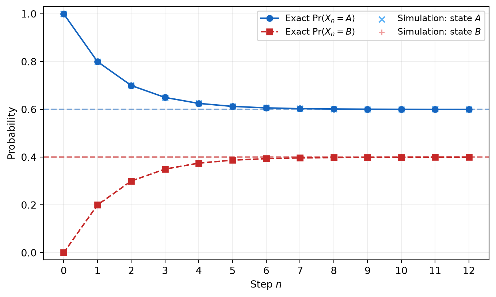

How a random one-step rule becomes deterministic matrix motion for probability mass, and which structural conditions guarantee that it forgets its beginning.
Published
August 1, 2026
“The essence of mathematics lies precisely in its freedom.”
Georg Cantor, Grundlagen einer allgemeinen Mannigfaltigkeitslehre, §8
A commuter reaches a junction. If she is at station \(A\), tomorrow she remains there with probability \(0.8\) and travels to station \(B\) with probability \(0.2\). If she is at \(B\), she returns to \(A\) with probability \(0.3\) and stays at \(B\) with probability \(0.7\).
Tomorrow is random. So is the day after that. An individual journey may look erratic for as long as we watch it.
And yet the distribution of many such journeys moves with no randomness at all.
This is the small surprise at the centre of a Markov chain. A local rule says how one state randomly hands its probability to the next. Once we stop tracking one traveller and instead track all the probability mass, that random rule becomes matrix multiplication. One step becomes a stochastic matrix. Many steps become its powers. Long-term behaviour becomes a question about fixed vectors and eigenvalues.
The point is not that probability disappears. It changes level. The sample path remains random; the distribution of the current state moves deterministically.
The rows describe where probability leaves from, and the columns describe where it arrives. Thus \(P_{AB}=0.2\) means that a traveller currently at \(A\) moves to \(B\) with probability \(0.2\).
This article uses row vectors for distributions. If
That convention is not universal. Some books use column vectors and write \(p_{n+1}=Pp_n\) instead. Both are correct when used consistently. Here the row convention makes each row of \(P\) read naturally as a conditional distribution.
Suppose every traveller begins at \(A\), so \(p_0=(1,0)\). After one step,
The first coordinate contains two mutually exclusive routes to \(A\): remain at \(A\) twice, or move from \(A\) to \(B\) and then return. Matrix multiplication is doing the bookkeeping required by the law of total probability. It multiplies probabilities along a route and adds across alternative routes.
This is the same structural move that appeared in Counting Domino Tilings: When Dynamic Programming Is a Matrix. There, a matrix power counted compatible paths through boundary states. Here, a matrix power weighs paths through probabilistic states. The algebra is the same because both problems ask us to sum over every possible intermediate state.
What makes the chain Markov
Let \(X_0,X_1,X_2,\ldots\) be random variables taking values in a finite state space \(S\). The process is a time-homogeneous Markov chain if
whenever the conditional probability is defined. The first equality is the Markov property: once the present state is known, the earlier path supplies no additional information about the next state. The second equality is time homogeneity: the same transition rule \(P\) is used at every step.
This is a statement about a model, not a declaration that the real world has no memory. If yesterday’s weather affects tomorrow even after today’s weather is known, then today’s weather alone is an incomplete state. Sometimes the repair is to enlarge the state to include more history. Sometimes no manageable Markov model is adequate. The property must be justified by the chosen state description, not assumed because matrices are convenient.
For each \(i,j\in S\), define
\[
P_{ij}=\Pr(X_{n+1}=j\mid X_n=i).
\]
Every entry is non-negative, and every row sums to one:
A matrix satisfying Equation 4 is called row-stochastic. Each row is itself a probability distribution. More importantly, it turns every probability distribution into another one.
To see this, let \(p\) have non-negative entries summing to one. Then
So \(P\) maps the probability simplex to itself. In two states, that simplex is only the line segment joining \((1,0)\) to \((0,1)\). In three states it is a triangle. In \(m\) states it is an \((m-1)\)-dimensional simplex. A Markov chain is a linear motion constrained to that geometric region.
Why powers of the matrix mean elapsed time
The entry \(P_{ij}\) is a one-step probability. What is the probability of moving from \(i\) to \(j\) in two steps? We do not know the intermediate state, so we sum over it:
The same argument repeats. Suppose \((P^n)_{ik}\) is the probability of moving from \(i\) to \(k\) in \(n\) steps. Conditioning on the state at time \(n\) gives
Equivalently, \(P^{m+n}=P^mP^n\), the discrete-time Chapman–Kolmogorov law. If an initial distribution is \(p_0\), then summing over the unknown starting state gives
\[
\boxed{p_n=p_0P^n.}
\tag{6}\]
The matrix \(P\) contains the local rule. Its power \(P^n\) contains every possible \(n\)-step route. Time has become an exponent.
That sentence should sound familiar. In Matrix Exponentials: When a Matrix Becomes Motion, \(e^{tA}\) accumulates infinitesimal motion into continuous time. Here \(P^n\) accumulates one-step motion into discrete time. A later article will connect these pictures through continuous-time Markov chains; for now, the integer power is the whole clock.
A distribution that does not move
Continue iterating Equation 1. The probability of being at \(A\) drops from \(1\) to \(0.8\), then \(0.70\), then \(0.65\). The changes become smaller. What distribution, if any, would be unchanged by one more step?
A probability row vector \(\pi\) is stationary if
\[
\pi P=\pi.
\tag{7}\]
For our two-state chain, write \(\pi=(a,1-a)\). The first coordinate of Equation 7 gives
\[
a=0.8a+0.3(1-a).
\]
Hence \(0.5a=0.3\), so
\[
\pi=(0.6,0.4).
\tag{8}\]
A common verbal trap is to call this an “equilibrium” and imagine that nothing is moving. In fact, probability is moving in both directions. At stationarity, the mass flowing from \(A\) to \(B\) is
\[
0.6\cdot0.2=0.12,
\]
while the mass flowing from \(B\) to \(A\) is
\[
0.4\cdot0.3=0.12.
\]
The flows balance. Stationary does not mean frozen; it means unchanged after all incoming and outgoing flows have been combined.
There is also a precise linear-algebraic reading. Equation Equation 7 says that \(\pi\) is a left eigenvector of \(P\) with eigenvalue \(1\), normalised so that its entries sum to one. The row sums of \(P\) also imply \(P\mathbf{1}=\mathbf{1}\) for the column vector of ones. Thus \(1\) is always an eigenvalue of a finite stochastic matrix. Stationary distributions, which are non-negative normalised left eigenvectors, need not be unique without additional hypotheses.
The exact motion in the two-state example
The stationary vector tells us where the distribution might settle, but not whether it gets there. For this example we can answer completely.
Subtract the stationary distribution from the current one. If \(p_n=(x_n,1-x_n)\), then
The error does not merely tend to zero. It is halved at every step. The vector \((0.4,-0.4)\) describes a redistribution of mass whose total is zero, and the factor \(1/2\) tells us how that imbalance contracts.
This is the eigenvector picture from The Essence of Linear Algebra in a probabilistic setting. One direction, the stationary direction, survives with eigenvalue \(1\). The other direction, which transfers mass between the two states without changing the total, shrinks with eigenvalue \(1/2\). Matrix powers turn those eigenvalues into \(1^n\) and \((1/2)^n\).
There is a useful general bound hiding nearby. If \(Pv=\lambda v\) for a non-zero complex column vector \(v\), choose an index \(i\) for which \(|v_i|=\max_j|v_j|\). Then
Since \(|v_i|>0\), every eigenvalue of a stochastic matrix satisfies
\[
|\lambda|\leq1.
\tag{10}\]
No eigenvalue lies outside the unit circle. But this bound alone does not say that every non-stationary mode shrinks. Other eigenvalues may also have modulus \(1\). That is exactly where convergence can fail.
Every two-state chain in one formula
The numerical example is not a lucky choice. We can solve the whole family of two-state chains with the same piece of algebra. Write
Strictly speaking, Equation 13 treats row vectors on the one-dimensional probability simplex: both \(p_0-\pi\) and its future versions have coordinates summing to zero. This is why a single scalar multiplier is enough. The two eigenvalues of \(P\) are \(1\) and \(1-a-b\).
The sign and magnitude of that second eigenvalue tell the entire story. If \(0<a+b<2\), then \(|1-a-b|<1\), and the distribution converges to \(\pi\). When \(a+b<1\), the error approaches zero without changing sign. When \(a+b>1\), it alternates across stationarity while shrinking. The motion can wobble and still converge.
The endpoints expose the failures. If \(a=b=0\), then \(P=I\) and the expression for \(\pi\) is undefined because there is no unique stationary distribution. If \(a=b=1\), then \(1-a-b=-1\) and the chain flips forever. These are not separate curiosities added after the theory. They are precisely the two places where the contracting factor stops contracting.
There are also one-way cases. If \(a=0\) and \(b>0\), state \(A\) is absorbing and every initial distribution converges to \((1,0)\). The chain converges even though it is not irreducible. This does not contradict the theorem below: irreducibility and aperiodicity are sufficient conditions for convergence to a common positive stationary law, not necessary conditions for every particular finite chain to have some limit.
When forgetting is actually guaranteed
Two structural obstructions matter.
A finite chain is irreducible if every state can reach every other state in some number of steps. Formally, for all \(i,j\) there exists \(n\geq0\) with \((P^n)_{ij}>0\).
The period of a state \(i\) is
\[
\gcd\{n\geq1:(P^n)_{ii}>0\}.
\]
An irreducible chain has the same period at every state. It is aperiodic if that common period is \(1\).
For finite chains, these conditions give the standard convergence theorem:
Theorem 1 (Finite-state convergence theorem) Let \(P\) be the transition matrix of a finite, irreducible, aperiodic Markov chain. Then there is a unique stationary distribution \(\pi\), every entry of \(\pi\) is positive, and for every initial distribution \(p_0\),
This theorem is proved in standard treatments of finite Markov chains; see Corollary 1.17 and Theorem 4.9 of Levin and Peres [1]. The full proof requires more machinery than our two-state calculation, so it is important not to pretend that the example proves the theorem. What the example does reveal is its mechanism: one direction preserves total probability, while the remaining modes must decay if the chain is to forget its start.
The next article devoted to mixing will make the word “converges” quantitative. It will also impose reversibility when using clean spectral-gap bounds. For now, the theorem above is qualitative and does not assume reversibility.
Two small chains that refuse to forget
The hypotheses are not decorative.
First take
\[
P=I=
\begin{pmatrix}1&0\\0&1\end{pmatrix}.
\]
Every distribution satisfies \(pP=p\), so every distribution is stationary. The chain is reducible: neither state can reach the other. It remembers its initial state perfectly. Existence of a stationary distribution therefore does not imply uniqueness or convergence to a common law.
The distribution oscillates forever. The return times are all even, so the period is \(2\). Algebraically, the non-stationary eigenvalue is \(-1\): its modulus does not shrink, while its sign alternates. A unique stationary distribution is still not enough for pointwise convergence.
These examples locate the two ways memory can survive. Reducibility traps mass in separate regions. Periodicity keeps mass moving on a rigid clock.
Let the computer check the arithmetic
The next code cell verifies the exact formula Equation 9 against direct matrix powers. It also checks the stochastic constraints, stationarity, eigenvalues, and the periodic counterexample. These assertions are a checksum for the calculations; they do not replace the proofs.
Code
import numpy as npimport matplotlib.pyplot as pltP = np.array([[0.8, 0.2], [0.3, 0.7]])p0 = np.array([1.0, 0.0])pi = np.array([0.6, 0.4])steps = np.arange(13)# Structural and analytic checks.assert np.all(P >=0)assert np.allclose(P.sum(axis=1), 1.0)assert np.allclose(pi @ P, pi)exact = np.array([p0 @ np.linalg.matrix_power(P, int(n)) for n in steps])closed_form = np.array([ pi + np.array([0.4, -0.4]) * (0.5**int(n))for n in steps])assert np.allclose(exact, closed_form, atol=1e-13)assert np.allclose(np.sort(np.linalg.eigvals(P)), np.array([0.5, 1.0]))# A second, stochastic calculation: simulate independent sample paths.rng = np.random.default_rng(20260731)n_paths =200_000states = np.zeros(n_paths, dtype=int)empirical = [np.bincount(states, minlength=2) / n_paths]for _ in steps[1:]: draws = rng.random(n_paths) states = np.where( states ==0, (draws >= P[0, 0]).astype(int), (draws >= P[1, 0]).astype(int), ) empirical.append(np.bincount(states, minlength=2) / n_paths)empirical = np.asarray(empirical)assert np.max(np.abs(empirical - exact)) <0.005# The irreducible periodic flip has a stationary law but does not converge.flip = np.array([[0.0, 1.0], [1.0, 0.0]])flip_law = np.array([p0 @ np.linalg.matrix_power(flip, int(n)) for n in steps])assert np.allclose(np.array([0.5, 0.5]) @ flip, np.array([0.5, 0.5]))assert np.allclose(flip_law[::2], np.tile([1.0, 0.0], (7, 1)))assert np.allclose(flip_law[1::2], np.tile([0.0, 1.0], (6, 1)))fig, ax = plt.subplots(figsize=(8.2, 4.7))ax.plot(steps, exact[:, 0], "o-", color="#1565c0", label="Exact $\\Pr(X_n=A)$")ax.plot(steps, exact[:, 1], "s--", color="#c62828", label="Exact $\\Pr(X_n=B)$")ax.scatter(steps, empirical[:, 0], marker="x", color="#64b5f6", label="Simulation: state $A$")ax.scatter(steps, empirical[:, 1], marker="+", color="#ef9a9a", label="Simulation: state $B$")ax.axhline(pi[0], color="#1565c0", linestyle="--", alpha=0.55)ax.axhline(pi[1], color="#c62828", linestyle="--", alpha=0.55)ax.set(xlabel="Step $n$", ylabel="Probability", ylim=(-0.03, 1.03))ax.set_xticks(steps)ax.grid(alpha=0.2)ax.legend(ncol=2, fontsize=9)plt.show()

Figure 1: Exact probability mass in the two-state chain, with a fixed-seed Monte Carlo check.
The crosses in the figure are simulation estimates. They fluctuate because only finitely many paths were sampled. The solid lines come from matrix powers and are exact up to floating-point arithmetic. Increasing n_paths reduces sampling error but does not change the underlying distribution. For each plotted proportion, the standard error is at most \(\sqrt{0.25/200{,}000}\approx0.00112\), so the code’s \(0.005\) checksum is deliberately conservative. Numerical round-off, Monte Carlo sampling error, and model error are three different things; this experiment contains the first two, while any application to real commuters would also contain the third.
Observables move through the same matrix
Sometimes we do not need the whole distribution. Suppose a function \(f:S\to\mathbb{R}\) assigns a value to each state. Treat its values as a column vector. Then
\[
\mathbb{E}[f(X_n)]
=\sum_j\Pr(X_n=j)f(j)
=p_n f
=p_0P^n f.
\tag{15}\]
The distribution moves forward by multiplying on the right. The observable can be moved backwards by applying \(P\) to the column vector \(f\):
These are two views of the same calculation. One pushes probability mass through the system; the other replaces each state’s value by its conditional next-step average. This duality becomes useful in random walks, dynamic programming, potential theory, and stochastic control.
It also shows why choosing the state matters. The matrix does not discover the right variables for us. It only propagates the rule we encoded. If the state omits a relevant memory, if the transition probabilities change over time, or if they were estimated poorly, then \(p_0P^n\) may be calculated perfectly and still describe the wrong world.
Where the model earns its keep
Finite Markov chains appear in algorithms, card shuffling, Markov chain Monte Carlo, statistical physics, networks, and models of dynamical processes [1]. The shared mathematics is not “everything is random”. It is more specific: after choosing a state that contains the relevant present information, the one-step conditional law can be applied repeatedly.
That repeated application lets us ask different kinds of questions:
Prediction: what is the distribution after \(n\) steps?
Long-run structure: is there a stationary distribution, and is it unique?
Forgetting: do different initial laws become close, and how quickly?
Accumulated quantities: what rewards, costs, or visits are expected along the path?
This article has answered the first question and opened the second and third. It has not given a universal licence to replace dependence by a Markov chain. Nor has it shown that every chain converges. The finite-state convergence theorem needs irreducibility and aperiodicity; quantitative spectral statements will need their own assumptions. Infinite state spaces introduce further issues such as recurrence and positive recurrence.
The matrix is powerful because it makes assumptions visible. Its rows declare exactly what the next step is allowed to remember.
What to remember
A Markov chain begins as a random rule for one state, but its distribution obeys a deterministic linear law:
\[
p_{n+1}=p_nP,
\qquad
p_n=p_0P^n.
\]
Matrix multiplication works because it multiplies probabilities along a route and sums over possible intermediate states. A stationary distribution is a normalised left eigenvector with eigenvalue \(1\); it represents balanced flow, not an absence of motion.
For the two-state example,
\[
p_n=(0.6,0.4)+(0.4,-0.4)2^{-n},
\]
so the initial imbalance is halved at each step. In general, finite, irreducible, aperiodic chains converge to a unique stationary distribution. Remove irreducibility and mass can remain trapped. Remove aperiodicity and it can oscillate forever.
The individual path is random. The probability mass has a geometry, a linear motion, and sometimes a destination.
---title: "Markov Chains: When Probability Becomes Motion"description: "How a random one-step rule becomes deterministic matrix motion for probability mass, and which structural conditions guarantee that it forgets its beginning."date: 2026-08-01categories: [applied, probability, linear-algebra]bibliography: ../../references.bibdraft: false---::: {.epigraph}"The essence of mathematics lies precisely in its freedom."[Georg Cantor, *Grundlagen einer allgemeinen Mannigfaltigkeitslehre*, §8]{.attribution}:::A commuter reaches a junction. If she is at station $A$, tomorrow she remainsthere with probability $0.8$ and travels to station $B$ with probability $0.2$.If she is at $B$, she returns to $A$ with probability $0.3$ and stays at $B$with probability $0.7$.Tomorrow is random. So is the day after that. An individual journey may lookerratic for as long as we watch it.And yet the *distribution* of many such journeys moves with no randomness atall.This is the small surprise at the centre of a Markov chain. A local rule sayshow one state randomly hands its probability to the next. Once we stop trackingone traveller and instead track all the probability mass, that random rulebecomes matrix multiplication. One step becomes a stochastic matrix. Manysteps become its powers. Long-term behaviour becomes a question about fixedvectors and eigenvalues.The point is not that probability disappears. It changes level. The samplepath remains random; the distribution of the current state movesdeterministically.## Two boxes passing probability massWrite the one-step rule as$$P=\begin{pmatrix}0.8 & 0.2\\0.3 & 0.7\end{pmatrix}.$$ {#eq-example-transition}The rows describe where probability leaves from, and the columns describewhere it arrives. Thus $P_{AB}=0.2$ means that a traveller currently at $A$moves to $B$ with probability $0.2$.This article uses **row vectors** for distributions. If$$p_n=\begin{pmatrix}\Pr(X_n=A) & \Pr(X_n=B)\end{pmatrix},$$then one step of probability flow is$$p_{n+1}=p_nP.$$ {#eq-distribution-update}That convention is not universal. Some books use column vectors and write$p_{n+1}=Pp_n$ instead. Both are correct when used consistently. Here the rowconvention makes each row of $P$ read naturally as a conditional distribution.Suppose every traveller begins at $A$, so $p_0=(1,0)$. After one step,$$p_1=(1,0)P=(0.8,0.2).$$After another step,$$\begin{aligned}p_2&=(0.8,0.2)P\\&=\bigl(0.8\cdot0.8+0.2\cdot0.3, 0.8\cdot0.2+0.2\cdot0.7\bigr)\\&=(0.70,0.30).\end{aligned}$$The first coordinate contains two mutually exclusive routes to $A$: remain at$A$ twice, or move from $A$ to $B$ and then return. Matrix multiplication isdoing the bookkeeping required by the law of total probability. It multipliesprobabilities along a route and adds across alternative routes.This is the same structural move that appeared in[*Counting Domino Tilings: When Dynamic Programming Is a Matrix*](../domino-tilings/).There, a matrix power counted compatible paths through boundary states. Here,a matrix power weighs paths through probabilistic states. The algebra is thesame because both problems ask us to sum over every possible intermediatestate.## What makes the chain MarkovLet $X_0,X_1,X_2,\ldots$ be random variables taking values in a finite statespace $S$. The process is a **time-homogeneous Markov chain** if$$\Pr(X_{n+1}=j\mid X_n=i,X_{n-1}=i_{n-1},\ldots,X_0=i_0)=\Pr(X_{n+1}=j\mid X_n=i)=P_{ij}$$ {#eq-markov-property}whenever the conditional probability is defined. The first equality is theMarkov property: once the present state is known, the earlier path supplies noadditional information about the next state. The second equality is timehomogeneity: the same transition rule $P$ is used at every step.This is a statement about a model, not a declaration that the real world has nomemory. If yesterday's weather affects tomorrow even after today's weather isknown, then today's weather alone is an incomplete state. Sometimes the repairis to enlarge the state to include more history. Sometimes no manageableMarkov model is adequate. The property must be justified by the chosen statedescription, not assumed because matrices are convenient.For each $i,j\in S$, define$$P_{ij}=\Pr(X_{n+1}=j\mid X_n=i).$$Every entry is non-negative, and every row sums to one:$$P_{ij}\geq0,\qquad\sum_{j\in S}P_{ij}=1.$$ {#eq-row-stochastic}A matrix satisfying @eq-row-stochastic is called **row-stochastic**. Each rowis itself a probability distribution. More importantly, it turns everyprobability distribution into another one.To see this, let $p$ have non-negative entries summing to one. Then$$(pP)_j=\sum_i p_iP_{ij}\geq0,$$and$$\sum_j(pP)_j=\sum_j\sum_i p_iP_{ij}=\sum_i p_i\sum_jP_{ij}=\sum_i p_i=1.$$So $P$ maps the probability simplex to itself. In two states, that simplex isonly the line segment joining $(1,0)$ to $(0,1)$. In three states it is atriangle. In $m$ states it is an $(m-1)$-dimensional simplex. A Markov chain isa linear motion constrained to that geometric region.## Why powers of the matrix mean elapsed timeThe entry $P_{ij}$ is a one-step probability. What is the probability of movingfrom $i$ to $j$ in two steps? We do not know the intermediate state, so we sumover it:$$\Pr(X_2=j\mid X_0=i)=\sum_{k\in S}\Pr(X_2=j\mid X_1=k,X_0=i)\Pr(X_1=k\mid X_0=i).$$By the Markov property, the first conditional probability on the right is$P_{kj}$, while the second is $P_{ik}$. Therefore$$\Pr(X_2=j\mid X_0=i)=\sum_kP_{ik}P_{kj}=(P^2)_{ij}.$$The same argument repeats. Suppose $(P^n)_{ik}$ is the probability of movingfrom $i$ to $k$ in $n$ steps. Conditioning on the state at time $n$ gives$$\Pr(X_{n+1}=j\mid X_0=i)=\sum_k(P^n)_{ik}P_{kj}=(P^{n+1})_{ij}.$$By induction,$$\boxed{\Pr(X_n=j\mid X_0=i)=(P^n)_{ij}.}$$ {#eq-n-step-transition}Equivalently, $P^{m+n}=P^mP^n$, the discrete-time Chapman–Kolmogorov law. If aninitial distribution is $p_0$, then summing over the unknown starting stategives$$\boxed{p_n=p_0P^n.}$$ {#eq-distribution-power}The matrix $P$ contains the local rule. Its power $P^n$ contains every possible$n$-step route. Time has become an exponent.That sentence should sound familiar. In[*Matrix Exponentials: When a Matrix Becomes Motion*](../matrix-exponentials-when-a-matrix-becomes-motion/),$e^{tA}$ accumulates infinitesimal motion into continuous time. Here $P^n$accumulates one-step motion into discrete time. A later article will connectthese pictures through continuous-time Markov chains; for now, the integerpower is the whole clock.## A distribution that does not moveContinue iterating @eq-example-transition. The probability of being at $A$drops from $1$ to $0.8$, then $0.70$, then $0.65$. The changes become smaller.What distribution, if any, would be unchanged by one more step?A probability row vector $\pi$ is **stationary** if$$\pi P=\pi.$$ {#eq-stationary-definition}For our two-state chain, write $\pi=(a,1-a)$. The first coordinate of@eq-stationary-definition gives$$a=0.8a+0.3(1-a).$$Hence $0.5a=0.3$, so$$\pi=(0.6,0.4).$$ {#eq-example-stationary}A common verbal trap is to call this an "equilibrium" and imagine that nothingis moving. In fact, probability is moving in both directions. At stationarity,the mass flowing from $A$ to $B$ is$$0.6\cdot0.2=0.12,$$while the mass flowing from $B$ to $A$ is$$0.4\cdot0.3=0.12.$$The flows balance. Stationary does not mean frozen; it means unchanged afterall incoming and outgoing flows have been combined.There is also a precise linear-algebraic reading. Equation@eq-stationary-definition says that $\pi$ is a **left eigenvector** of $P$ witheigenvalue $1$, normalised so that its entries sum to one. The row sums of $P$also imply $P\mathbf{1}=\mathbf{1}$ for the column vector of ones. Thus $1$ isalways an eigenvalue of a finite stochastic matrix. Stationary distributions,which are non-negative normalised left eigenvectors, need not be unique withoutadditional hypotheses.## The exact motion in the two-state exampleThe stationary vector tells us where the distribution might settle, but notwhether it gets there. For this example we can answer completely.Subtract the stationary distribution from the current one. If$p_n=(x_n,1-x_n)$, then$$\begin{aligned}x_{n+1}&=0.8x_n+0.3(1-x_n)\\&=0.3+0.5x_n.\end{aligned}$$Since the stationary first coordinate $0.6$ satisfies$0.6=0.3+0.5(0.6)$, subtraction gives$$x_{n+1}-0.6=0.5(x_n-0.6).$$Starting from $x_0=1$, repeated substitution yields$$x_n-0.6=0.4\left(\frac12\right)^n.$$Therefore$$\boxed{p_n=(0.6,0.4)+(0.4,-0.4)\left(\frac12\right)^n.}$$ {#eq-exact-two-state}The error does not merely tend to zero. It is halved at every step. The vector$(0.4,-0.4)$ describes a redistribution of mass whose total is zero, and thefactor $1/2$ tells us how that imbalance contracts.This is the eigenvector picture from[*The Essence of Linear Algebra*](../the-essence-of-linear-algebra/) in aprobabilistic setting. One direction, the stationary direction, survives witheigenvalue $1$. The other direction, which transfers mass between the twostates without changing the total, shrinks with eigenvalue $1/2$. Matrix powersturn those eigenvalues into $1^n$ and $(1/2)^n$.There is a useful general bound hiding nearby. If $Pv=\lambda v$ for a non-zerocomplex column vector $v$, choose an index $i$ for which$|v_i|=\max_j|v_j|$. Then$$|\lambda|\,|v_i|=|(Pv)_i|=\left|\sum_jP_{ij}v_j\right|\leq\sum_jP_{ij}|v_j|\leq |v_i|\sum_jP_{ij}=|v_i|.$$Since $|v_i|>0$, every eigenvalue of a stochastic matrix satisfies$$|\lambda|\leq1.$$ {#eq-eigenvalue-bound}No eigenvalue lies outside the unit circle. But this bound alone does not saythat every non-stationary mode shrinks. Other eigenvalues may also have modulus$1$. That is exactly where convergence can fail.## Every two-state chain in one formulaThe numerical example is not a lucky choice. We can solve the whole family oftwo-state chains with the same piece of algebra. Write$$P=\begin{pmatrix}1-a&a\\b&1-b\end{pmatrix},\qquad 0\leq a,b\leq1.$$ {#eq-general-two-state}Here $a$ is the probability of leaving $A$ for $B$, while $b$ is theprobability of returning. If $a+b>0$, solving $\pi P=\pi$ gives$$\pi=\left(\frac{b}{a+b},\frac{a}{a+b}\right).$$ {#eq-general-two-state-stationary}Now let $p_n=(x_n,1-x_n)$. Its first coordinate evolves by$$x_{n+1}=(1-a)x_n+b(1-x_n)=b+(1-a-b)x_n.$$The stationary coordinate $b/(a+b)$ satisfies the same affine equation, sosubtracting it gives$$x_{n+1}-\frac{b}{a+b}=(1-a-b)\left(x_n-\frac{b}{a+b}\right).$$Repeated application produces the exact law$$\boxed{p_n=\pi+(1-a-b)^n(p_0-\pi).}$$ {#eq-general-two-state-solution}Strictly speaking, @eq-general-two-state-solution treats row vectors on theone-dimensional probability simplex: both $p_0-\pi$ and its future versionshave coordinates summing to zero. This is why a single scalar multiplier isenough. The two eigenvalues of $P$ are $1$ and $1-a-b$.The sign and magnitude of that second eigenvalue tell the entire story. If$0<a+b<2$, then $|1-a-b|<1$, and the distribution converges to $\pi$. When$a+b<1$, the error approaches zero without changing sign. When $a+b>1$, italternates across stationarity while shrinking. The motion can wobble and stillconverge.The endpoints expose the failures. If $a=b=0$, then $P=I$ and the expressionfor $\pi$ is undefined because there is no unique stationary distribution. If$a=b=1$, then $1-a-b=-1$ and the chain flips forever. These are not separatecuriosities added after the theory. They are precisely the two places where thecontracting factor stops contracting.There are also one-way cases. If $a=0$ and $b>0$, state $A$ is absorbing andevery initial distribution converges to $(1,0)$. The chain converges even thoughit is not irreducible. This does not contradict the theorem below:irreducibility and aperiodicity are sufficient conditions for convergence to acommon positive stationary law, not necessary conditions for every particularfinite chain to have some limit.## When forgetting is actually guaranteedTwo structural obstructions matter.A finite chain is **irreducible** if every state can reach every other state insome number of steps. Formally, for all $i,j$ there exists $n\geq0$ with$(P^n)_{ij}>0$.The **period** of a state $i$ is$$\gcd\{n\geq1:(P^n)_{ii}>0\}.$$An irreducible chain has the same period at every state. It is **aperiodic** ifthat common period is $1$.For finite chains, these conditions give the standard convergence theorem:::: {#thm-finite-convergence .theorem}## Finite-state convergence theoremLet $P$ be the transition matrix of a finite, irreducible, aperiodic Markovchain. Then there is a unique stationary distribution $\pi$, every entry of$\pi$ is positive, and for every initial distribution $p_0$,$$p_0P^n\longrightarrow\pi\qquad\text{as }n\to\infty.$$:::This theorem is proved in standard treatments of finite Markov chains; seeCorollary 1.17 and Theorem 4.9 of Levin and Peres[@levinperes2017markov]. The full proof requires more machinery than ourtwo-state calculation, so it is important not to pretend that the exampleproves the theorem. What the example does reveal is its mechanism: onedirection preserves total probability, while the remaining modes must decay ifthe chain is to forget its start.The next article devoted to mixing will make the word "converges" quantitative.It will also impose reversibility when using clean spectral-gap bounds. For now,the theorem above is qualitative and does **not** assume reversibility.## Two small chains that refuse to forgetThe hypotheses are not decorative.First take$$P=I=\begin{pmatrix}1&0\\0&1\end{pmatrix}.$$Every distribution satisfies $pP=p$, so every distribution is stationary. Thechain is reducible: neither state can reach the other. It remembers its initialstate perfectly. Existence of a stationary distribution therefore does notimply uniqueness or convergence to a common law.Now take the deterministic flip$$P=\begin{pmatrix}0&1\\1&0\end{pmatrix}.$$ {#eq-periodic-flip}This chain is irreducible, and its unique stationary distribution is$(1/2,1/2)$. But starting from $(1,0)$ gives$$(1,0)P^{2n}=(1,0),\qquad(1,0)P^{2n+1}=(0,1).$$The distribution oscillates forever. The return times are all even, so theperiod is $2$. Algebraically, the non-stationary eigenvalue is $-1$: its modulusdoes not shrink, while its sign alternates. A unique stationary distribution isstill not enough for pointwise convergence.These examples locate the two ways memory can survive. Reducibility traps massin separate regions. Periodicity keeps mass moving on a rigid clock.## Let the computer check the arithmeticThe next code cell verifies the exact formula @eq-exact-two-state against directmatrix powers. It also checks the stochastic constraints, stationarity,eigenvalues, and the periodic counterexample. These assertions are a checksumfor the calculations; they do not replace the proofs.```{python}#| label: fig-markov-mass#| fig-cap: "Exact probability mass in the two-state chain, with a fixed-seed Monte Carlo check."#| code-fold: trueimport numpy as npimport matplotlib.pyplot as pltP = np.array([[0.8, 0.2], [0.3, 0.7]])p0 = np.array([1.0, 0.0])pi = np.array([0.6, 0.4])steps = np.arange(13)# Structural and analytic checks.assert np.all(P >=0)assert np.allclose(P.sum(axis=1), 1.0)assert np.allclose(pi @ P, pi)exact = np.array([p0 @ np.linalg.matrix_power(P, int(n)) for n in steps])closed_form = np.array([ pi + np.array([0.4, -0.4]) * (0.5**int(n))for n in steps])assert np.allclose(exact, closed_form, atol=1e-13)assert np.allclose(np.sort(np.linalg.eigvals(P)), np.array([0.5, 1.0]))# A second, stochastic calculation: simulate independent sample paths.rng = np.random.default_rng(20260731)n_paths =200_000states = np.zeros(n_paths, dtype=int)empirical = [np.bincount(states, minlength=2) / n_paths]for _ in steps[1:]: draws = rng.random(n_paths) states = np.where( states ==0, (draws >= P[0, 0]).astype(int), (draws >= P[1, 0]).astype(int), ) empirical.append(np.bincount(states, minlength=2) / n_paths)empirical = np.asarray(empirical)assert np.max(np.abs(empirical - exact)) <0.005# The irreducible periodic flip has a stationary law but does not converge.flip = np.array([[0.0, 1.0], [1.0, 0.0]])flip_law = np.array([p0 @ np.linalg.matrix_power(flip, int(n)) for n in steps])assert np.allclose(np.array([0.5, 0.5]) @ flip, np.array([0.5, 0.5]))assert np.allclose(flip_law[::2], np.tile([1.0, 0.0], (7, 1)))assert np.allclose(flip_law[1::2], np.tile([0.0, 1.0], (6, 1)))fig, ax = plt.subplots(figsize=(8.2, 4.7))ax.plot(steps, exact[:, 0], "o-", color="#1565c0", label="Exact $\\Pr(X_n=A)$")ax.plot(steps, exact[:, 1], "s--", color="#c62828", label="Exact $\\Pr(X_n=B)$")ax.scatter(steps, empirical[:, 0], marker="x", color="#64b5f6", label="Simulation: state $A$")ax.scatter(steps, empirical[:, 1], marker="+", color="#ef9a9a", label="Simulation: state $B$")ax.axhline(pi[0], color="#1565c0", linestyle="--", alpha=0.55)ax.axhline(pi[1], color="#c62828", linestyle="--", alpha=0.55)ax.set(xlabel="Step $n$", ylabel="Probability", ylim=(-0.03, 1.03))ax.set_xticks(steps)ax.grid(alpha=0.2)ax.legend(ncol=2, fontsize=9)plt.show()```The crosses in the figure are simulation estimates. They fluctuate because onlyfinitely many paths were sampled. The solid lines come from matrix powers andare exact up to floating-point arithmetic. Increasing `n_paths` reduces samplingerror but does not change the underlying distribution. For each plottedproportion, the standard error is at most$\sqrt{0.25/200{,}000}\approx0.00112$, so the code's $0.005$ checksum isdeliberately conservative. Numerical round-off, Monte Carlo sampling error, andmodel error are three different things; this experiment contains the first two,while any application to real commuters would also contain the third.## Observables move through the same matrixSometimes we do not need the whole distribution. Suppose a function$f:S\to\mathbb{R}$ assigns a value to each state. Treat its values as a columnvector. Then$$\mathbb{E}[f(X_n)]=\sum_j\Pr(X_n=j)f(j)=p_n f=p_0P^n f.$$ {#eq-observable-expectation}The distribution moves forward by multiplying on the right. The observable canbe moved backwards by applying $P$ to the column vector $f$:$$(Pf)(i)=\sum_jP_{ij}f(j)=\mathbb{E}[f(X_{n+1})\mid X_n=i].$$These are two views of the same calculation. One pushes probability massthrough the system; the other replaces each state's value by its conditionalnext-step average. This duality becomes useful in random walks, dynamicprogramming, potential theory, and stochastic control.It also shows why choosing the state matters. The matrix does not discover theright variables for us. It only propagates the rule we encoded. If the stateomits a relevant memory, if the transition probabilities change over time, orif they were estimated poorly, then $p_0P^n$ may be calculated perfectly andstill describe the wrong world.## Where the model earns its keepFinite Markov chains appear in algorithms, card shuffling, Markov chain MonteCarlo, statistical physics, networks, and models of dynamical processes[@levinperes2017markov]. The shared mathematics is not "everything is random".It is more specific: after choosing a state that contains the relevant presentinformation, the one-step conditional law can be applied repeatedly.That repeated application lets us ask different kinds of questions:1. **Prediction:** what is the distribution after $n$ steps?2. **Long-run structure:** is there a stationary distribution, and is it unique?3. **Forgetting:** do different initial laws become close, and how quickly?4. **Accumulated quantities:** what rewards, costs, or visits are expected along the path?This article has answered the first question and opened the second and third.It has not given a universal licence to replace dependence by a Markov chain.Nor has it shown that every chain converges. The finite-state convergencetheorem needs irreducibility and aperiodicity; quantitative spectral statementswill need their own assumptions. Infinite state spaces introduce further issuessuch as recurrence and positive recurrence.The matrix is powerful because it makes assumptions visible. Its rows declareexactly what the next step is allowed to remember.## What to rememberA Markov chain begins as a random rule for one state, but its distributionobeys a deterministic linear law:$$p_{n+1}=p_nP,\qquadp_n=p_0P^n.$$Matrix multiplication works because it multiplies probabilities along a routeand sums over possible intermediate states. A stationary distribution is anormalised left eigenvector with eigenvalue $1$; it represents balanced flow,not an absence of motion.For the two-state example,$$p_n=(0.6,0.4)+(0.4,-0.4)2^{-n},$$so the initial imbalance is halved at each step. In general, finite,irreducible, aperiodic chains converge to a unique stationary distribution.Remove irreducibility and mass can remain trapped. Remove aperiodicity and itcan oscillate forever.The individual path is random. The probability mass has a geometry, a linearmotion, and sometimes a destination.## How to citeHuang, T. (2026). "Markov Chains: When Probability Becomes Motion."*Math Notes*. <https://terryfxh.github.io/math-notes/posts/markov-chains-when-probability-becomes-motion/>## References::: {#refs}:::